Estimation of normal probabilities by multiple integration algorithms in GAIL
Authors: Lluis Antoni Jimenez Rugama, Lan Jiang, and Jagadeeswaran Rathinavel, April 2019
Contents
Introduction
For 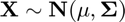, we will estimate the following probability:
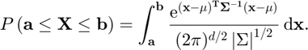
We present three tests, each of which approximates the aforementioned probability using cubSobol_g, cubMC_g and cubBayesLattice_g, cubLattice_g, and cubBayesNet_g which are quasi-Monte Carlo, IID Monte Carlo and Bayesian cubature algorithms respectively in GAIL. In order to facilitate the computations when 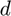 is high (>4), we are going to apply a special transformation of the integrand proposed by Alan Genz.
Basic integration parameters set up
For all the examples, the dimension of the problem is 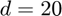. The user input tolerances are also set up below: abstol is the absolute error tolerance, and reltol the relative error tolerance. When reltol is set to 0, the algorithms use pure absolute error bound, and vice versa. Finally, for simplicity we define the mean of the distribution to be 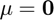:
function demo_normal_probabilities_small(nRep)
d = 20; % Dimension of the problem abstol = 1e-3; % User input, absolute error bound reltol = 0; % User input, relative error bound mu = zeros(d,1); % Mean of the distribution if nargin < 1 nRep = 10; end nTest = 2; Ivec(nTest) = 0; approx_prob_MC(nRep,nTest) = 0; % out_param_MC(nRep,nTest) = 0; timeMC(nRep,nTest) = 0; nSampleMC(nRep,nTest) = 0; approx_prob_sobol(nRep,nTest) = 0; % out_param_sobol(nRep,nTest) = 0; timeSob(nRep,nTest) = 0; nSampleSob(nRep,nTest) = 0; approx_prob_lat(nRep,nTest) = 0; % out_param_lat(nRep,nTest) = 0; timeLat(nRep,nTest) = 0; nSampleLat(nRep,nTest) = 0; approx_prob_BayLat(nRep,nTest) = 0; % out_param_BayLat(nRep,nTest) = 0; timeBayLat(nRep,nTest) = 0; nSampleBayLat(nRep,nTest) = 0; approx_prob_BaySob(nRep,nTest) = 0; timeBaySob(nRep,nTest) = 0; nSampleBaySob(nRep,nTest) = 0;
First test:
For this first example, we consider , and 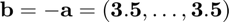. In this case, the solution of the integral is known so we can verify that the error conditions are met:
Sigma = eye(d); % We set the covariance matrix to the identity factor = 3.5; hyperbox = [-factor*ones(1,d) ; factor*ones(1,d)]; % We define the integration limits exactsol = (gail.stdnormcdf(factor)-gail.stdnormcdf(-factor))^d; % Exact integral solution Ivec(1) = exactsol; % Solution approx_prob and integration output parameters in out_param % Test 1.1: cubMC_g for k=1:nRep [approx_prob_MC(k,1),out_param_MC(k,1)] = multi_normcdf_cubMC(hyperbox,mu,Sigma,abstol,reltol); end timeMC(:,1) = [out_param_MC(:,1).time]; nSampleMC(:,1) = [out_param_MC(:,1).ntot]; report_integration_result('Test 1.1', 'cubMC_g',abstol,reltol,exactsol,... mean(approx_prob_MC(:,1)),mean(timeMC(:,1)),mean(nSampleMC(:,1))) % Test 1.2: cubLattice_g for k=1:nRep [approx_prob_lat(k,1),out_param_lat(k,1)] = multi_normcdf_cubLat(hyperbox,mu,Sigma,abstol,reltol); end timeLat(:,1) = [out_param_lat(:,1).time]; nSampleLat(:,1) = [out_param_lat(:,1).n]; report_integration_result('Test 1.2', 'cubLattice_g',abstol,reltol,exactsol,... mean(approx_prob_lat(:,1)),mean(timeLat(:,1)),mean(nSampleLat(:,1))) % Test 1.3: cubSobol_g for k=1:nRep [approx_prob_sobol(k,1),out_param_sobol(k,1)] = multi_normcdf_cubSobol(hyperbox,mu,Sigma,abstol,reltol); end timeSob(:,1) = [out_param_sobol(:,1).time]; nSampleSob(:,1) = [out_param_sobol(:,1).n]; report_integration_result('Test 1.3', 'cubSobol_g',abstol,reltol,exactsol,... mean(approx_prob_sobol(:,1)),mean(timeSob(:,1)),mean(nSampleSob(:,1))) % Test 1.4: cubBayesLattice_g for k=1:nRep [approx_prob_BayLat(k,1),out_param_BayLat(k,1)] = multi_normcdf_cubBayesLat(hyperbox,mu,Sigma,abstol,reltol); end timeBayLat(:,1) = [out_param_BayLat(:,1).time]; nSampleBayLat(:,1) = [out_param_BayLat(:,1).n]; report_integration_result('Test 1.4', 'cubBayesLattice_g', abstol,reltol,... NaN,mean(approx_prob_BayLat(:,1)), (mean(timeBayLat(:,1))), (mean(nSampleBayLat(:,1)))) % Test 1.5: cubBayesNet_g for k=1:nRep [approx_prob_BaySob(k,1),out_param_BaySob(k,1)] = multi_normcdf_cubBayesNet(hyperbox,mu,Sigma,abstol,reltol); end timeBaySob(:,1) = [out_param_BaySob(:,1).time]; nSampleBaySob(:,1) = [out_param_BaySob(:,1).n]; report_integration_result('Test 1.5','cubBayesNet_g',abstol,reltol,NaN,... mean(approx_prob_BaySob(:,1)),mean(timeBaySob(:,1)),mean(nSampleBaySob(:,1)))
Test 1.1: cubMC_g
Estimated probability: 0.990736
True probability: 0.990736
The algorithm took 0.059 seconds and 10013 points
Real error is 4.441e-16, which is less than the tolerance 1.000e-03
Test 1.2: cubLattice_g
Estimated probability: 0.990736
True probability: 0.990736
The algorithm took 0.015 seconds and 1024 points
Real error is 2.709e-14, which is less than the tolerance 1.000e-03
Test 1.3: cubSobol_g
Estimated probability: 0.990736
True probability: 0.990736
The algorithm took 0.013 seconds and 1024 points
Real error is 2.709e-14, which is less than the tolerance 1.000e-03
Test 1.4: cubBayesLattice_g
Estimated probability: 0.990736
The algorithm took 0.019 seconds and 256 points
Test 1.5: cubBayesNet_g
Estimated probability: 0.990736
The algorithm took 0.037 seconds and 256 points
Second test:
For this second example, we consider (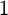 on the diagonal, 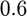 off the diagonal), 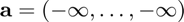, and 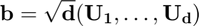 (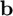 is chosen randomly). The solution for this integral is known too so we can verify the real error:
sig = 0.6; Sigma = sig*ones(d,d); Sigma(1:d+1:d*d) = 1; % set the covariance matrix hyperbox = [-Inf*ones(1,d) ; sqrt(d)*rand(1,d)]; % define the integration limits exactsol = integral(@(t)MVNPexact(t,hyperbox(2,:),sig),... -inf, inf,'Abstol',1e-8,'RelTol',1e-8)/sqrt(2*pi); Ivec(2) = exactsol; % Solution approx_prob and integration output parameters in out_param % Test 2.1: cubMC_g for k=1:nRep [approx_prob_MC(k,2),out_param_MC(k,2)] = multi_normcdf_cubMC(hyperbox,mu,Sigma,abstol,reltol); end timeMC(:,2) = [out_param_MC(:,2).time]; nSampleMC(:,2) = [out_param_MC(:,2).ntot]; report_integration_result('Test 2.1','cubMC_g',abstol,reltol,... exactsol,mean(approx_prob_MC(:,2)),mean(timeMC(:,2)),mean(nSampleMC(:,2))) % Test 2.2: cubLattice_g for k=1:nRep [approx_prob_lat(k,2),out_param_lat(k,2)] = multi_normcdf_cubLat(hyperbox,mu,Sigma,abstol,reltol); end timeLat(:,2) = [out_param_lat(:,2).time]; nSampleLat(:,2) = [out_param_lat(:,2).n]; report_integration_result('Test 2.2','cubLattice_g',abstol,reltol,... exactsol,mean(approx_prob_lat(:,2)),mean(timeLat(:,2)),mean(nSampleLat(:,2))) % Test 2.3: cubSobol_g for k=1:nRep [approx_prob_sobol(k,2),out_param_sobol(k,2)] = multi_normcdf_cubSobol(hyperbox,mu,Sigma,abstol,reltol); end timeSob(:,2) = [out_param_sobol(:,2).time]; nSampleSob(:,2) = [out_param_sobol(:,2).n]; report_integration_result('Test 2.3','cubSobol_g',abstol,reltol,... exactsol,mean(approx_prob_sobol(:,2)),mean(timeSob(:,2)),mean(nSampleSob(:,2))) % Test 2.4: cubBayesLattice_g for k=1:nRep [approx_prob_BayLat(k,2),out_param_BayLat(k,2)] = multi_normcdf_cubBayesLat(... hyperbox,mu,Sigma,abstol,reltol); end timeBayLat(:,2) = [out_param_BayLat(:,2).time]; nSampleBayLat(:,2) = [out_param_BayLat(:,2).n]; report_integration_result('Test 2.4','cubBayesLattice_g',abstol,reltol,... NaN,mean(approx_prob_BayLat(:,2)),mean(timeBayLat(:,2)),mean(nSampleBayLat(:,2))) % Test 2.5: cubBayesNet_g for k=1:nRep [approx_prob_BaySob(k,2),out_param_BaySob(k,2)] = multi_normcdf_cubBayesNet(... hyperbox,mu,Sigma,abstol,reltol); end timeBaySob(:,2) = [out_param_BaySob(:,2).time]; nSampleBaySob(:,2) = [out_param_BaySob(:,2).n]; report_integration_result('Test 2.5','cubBayesNet_g',abstol,reltol,... NaN,mean(approx_prob_BaySob(:,2)),mean(timeBaySob(:,2)),mean(nSampleBaySob(:,2))) %%%%%%%%%%%%%%%%%%%%%%%%%%%%%%%%%%%%%%%%%%%%%%%%%%%%%%%%%%%%%%%%%%%%%%%%%%% Ivec = repmat(Ivec,nRep,1); absErrMC = abs(Ivec-approx_prob_MC); succMC = mean(absErrMC <= abstol) avgAbsErrMC = mean(absErrMC) absErrSob = abs(Ivec-approx_prob_sobol); succSob = mean(absErrSob <= abstol) avgAbsErrSob = mean(absErrSob) absErrLat = abs(Ivec-approx_prob_lat); succLat = mean(absErrLat <= abstol) avgAbsErrLat = mean(absErrLat) absErrBayLat = abs(Ivec-approx_prob_BayLat); succBayLat = mean(absErrBayLat <= abstol) avgAbsErrBayLat = mean(absErrBayLat) absErrBaySob = abs(Ivec-approx_prob_BaySob); succBaySob = mean(absErrBaySob <= abstol) avgAbsErrBaySob = mean(absErrBaySob) timeMC = mean(timeMC); timeLat = mean(timeLat); timeSob = mean(timeSob); timeBayLat = mean(timeBayLat); timeBaySob = mean(timeBaySob); nSampleMC = mean(nSampleMC); nSampleLat = mean(nSampleLat); nSampleSob = mean(nSampleSob); nSampleBayLat = mean(nSampleBayLat); nSampleBaySob = mean(nSampleBaySob); outFileName = gail.save_mat('Paper_cubBayesLattice_g',['MVNCubExBayesDataNRep' int2str(nRep)],... true, abstol, ... avgAbsErrMC, avgAbsErrLat, avgAbsErrSob, avgAbsErrBayLat, avgAbsErrBaySob, ... succMC, succLat, succSob, succBayLat, succBaySob, ... timeMC, timeLat, timeSob, timeBayLat, timeBaySob, ... nSampleMC, nSampleLat, nSampleSob, nSampleBayLat, nSampleBaySob); MVNCubExBayesOut(outFileName) fprintf('')
Test 2.1: cubMC_g
Estimated probability: 0.363514
True probability: 0.363556
The algorithm took 4.286 seconds and 1.425005e+06 points
Real error is 4.125e-05, which is less than the tolerance 1.000e-03
Test 2.2: cubLattice_g
Estimated probability: 0.363645
True probability: 0.363556
The algorithm took 0.021 seconds and 2048 points
Real error is 8.987e-05, which is less than the tolerance 1.000e-03
Test 2.3: cubSobol_g
Estimated probability: 0.363350
True probability: 0.363556
The algorithm took 0.014 seconds and 2048 points
Real error is 2.057e-04, which is less than the tolerance 1.000e-03
Test 2.4: cubBayesLattice_g
Estimated probability: 0.363523
The algorithm took 0.168 seconds and 16384 points
Test 2.5: cubBayesNet_g
Estimated probability: 0.363586
The algorithm took 0.815 seconds and 16384 points
succMC =
1 1
avgAbsErrMC =
2.2204e-16 1.6624e-04
succSob =
1 1
avgAbsErrSob =
2.7089e-14 3.2291e-04
succLat =
1 1
avgAbsErrLat =
2.7089e-14 1.7783e-04
succBayLat =
1 1
avgAbsErrBayLat =
2.2204e-16 9.8186e-05
succBaySob =
1 1
avgAbsErrBaySob =
2.2204e-16 7.5647e-05
Third test:
For this last example, we consider the same covariance matrix in the second test but the upper and lower limits are different, 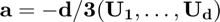, and  (both 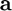 and are chosen randomly):
(both 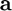 and are chosen randomly):
hyperbox = [-(d/3)*rand(1,d) ; (d/3)*rand(1,d)]; % We define the integration limits % Solution approx_prob and integration output parameters in out_param % Test 3.1: cubMC_g [approx_prob,out_param] = multi_normcdf_cubMC(hyperbox,mu,Sigma,abstol,reltol); report_integration_result('Test 3.1','cubMC_g',abstol,reltol,... NaN,approx_prob,out_param.time,out_param.ntot) % Test 3.2: cubSobol_g [approx_prob,out_param] = multi_normcdf_cubSobol(hyperbox,mu,Sigma,abstol,reltol); report_integration_result('Test 3.2','cubSobol_g',abstol,reltol,... NaN,approx_prob,out_param.time,out_param.n) % Test 3.3: cubBayesLattice_g [approx_prob,out_param] = multi_normcdf_cubBayesLat(hyperbox,mu,... Sigma,abstol,reltol); report_integration_result('Test 3.3','cubBayesLattice_g',abstol,reltol,... NaN,approx_prob,out_param.time,out_param.n) % Test 3.4: cubBayesNet_g [approx_prob,out_param] = multi_normcdf_cubBayesNet(hyperbox,mu,... Sigma,abstol,reltol); report_integration_result('Test 3.4','cubBayesNet_g',abstol,reltol,... NaN,approx_prob,out_param.time,out_param.n) fprintf('')
Test 3.1: cubMC_g Estimated probability: 0.074828 The algorithm took 0.372 seconds and 111491 points Test 3.2: cubSobol_g Estimated probability: 0.076215 The algorithm took 0.016 seconds and 1024 points Test 3.3: cubBayesLattice_g Estimated probability: 0.075130 The algorithm took 0.060 seconds and 4096 points Test 3.4: cubBayesNet_g Estimated probability: 0.074898 The algorithm took 0.208 seconds and 4096 points
Appendix: Auxiliary function definitions
The following functions are defined for the above test examples. multi_normcdf_cubSobol and multi_normcdf_cubMC redefine cubSobol_g and cubMC_g respectively for computing normal probabilities based on Alan Genz's transformation. f is the function resulting from applying Alan Genz's transform that is called in either cubSobol_g or cubMC_g.
function [p,out, y, kappanumap] = multi_normcdf_cubSobol(hyperbox,mu,... Sigma,abstol,reltol) % Using cubSobol_g, multi_normcdf_cubMC computes the cumulative % distribution function of the multivariate normal distribution with mean % mu, covariance matrix Sigma and within the region defined by hyperbox. hyperbox = bsxfun(@minus, hyperbox, mu'); C = chol(Sigma)'; d = size(C,1); a = hyperbox(1,1)/C(1,1); b = hyperbox(2,1)/C(1,1); s = gail.stdnormcdf(a); e = gail.stdnormcdf(b); [p, out, y, kappanumap] = cubSobol_g(... @(x) f(s,e,hyperbox,x,C), [zeros(1,d-1);ones(1,d-1)],... 'uniform',abstol,reltol); end function [p,out, y, kappanumap] = multi_normcdf_cubLat(hyperbox,mu,... Sigma,abstol,reltol) % Using cubLattice_g, multi_normcdf_cubLat computes the cumulative % distribution function of the multivariate normal distribution with mean % mu, covariance matrix Sigma and within the region defined by hyperbox. hyperbox = bsxfun(@minus, hyperbox, mu'); C = chol(Sigma)'; d = size(C,1); a = hyperbox(1,1)/C(1,1); b = hyperbox(2,1)/C(1,1); s = gail.stdnormcdf(a); e = gail.stdnormcdf(b); [p, out, y, kappanumap] = cubLattice_g(... @(x) f(s,e,hyperbox,x,C), [zeros(1,d-1);ones(1,d-1)],... 'uniform',abstol,reltol); end function [p,out] = multi_normcdf_cubBayesLat(hyperbox,mu,Sigma,abstol,reltol) % Using cubBayesLattice_g, multi_normcdf_cubBayesLat computes the cumulative % distribution function of the multivariate normal distribution with mean % mu, covariance matrix Sigma and within the region defined by hyperbox. hyperbox = bsxfun(@minus, hyperbox, mu'); C = chol(Sigma)'; a = hyperbox(1,1)/C(1,1); b = hyperbox(2,1)/C(1,1); s = gail.stdnormcdf(a); e = gail.stdnormcdf(b); [~,dim] = size(hyperbox); inputArgs = {'absTol',abstol, 'reltol',reltol, ... 'order',1, 'ptransform','Baker', .... 'stopAtTol',true, 'stopCriterion','full'... 'arbMean',true, 'alpha',0.01 ... 'optTechnique','None'}; integrand = @(x) f(s,e,hyperbox,x,C); inputArgs{end+1} = 'fName'; inputArgs{end+1} = 'MVN'; objCubBayes=cubBayesLattice_g(integrand,dim, inputArgs{:}); [p,out]=compInteg(objCubBayes); end function [p,out] = multi_normcdf_cubBayesNet(hyperbox,mu,Sigma,abstol,reltol) % Using cubBayesLattice_g, multi_normcdf_cubBayes computes the cumulative % distribution function of the multivariate normal distribution with mean % mu, covariance matrix Sigma and within the region defined by hyperbox. hyperbox = bsxfun(@minus, hyperbox, mu'); C = chol(Sigma)'; a = hyperbox(1,1)/C(1,1); b = hyperbox(2,1)/C(1,1); s = gail.stdnormcdf(a); e = gail.stdnormcdf(b); [~,dim] = size(hyperbox); inputArgs = {'absTol',abstol, 'reltol',reltol, ... 'order',1, .... 'stopAtTol',true, 'stopCriterion','full'... 'arbMean',true, 'alpha',0.01 ... 'optTechnique','None'}; integrand = @(x) f(s,e,hyperbox,x,C); inputArgs{end+1} = 'fName'; inputArgs{end+1} = 'MVN'; objCubBayes=cubBayesNet_g(integrand,dim,inputArgs{:}); [p,out]=compInteg(objCubBayes); end function [Q,param] = multi_normcdf_cubMC(hyperbox,mu,Sigma,abstol,reltol) % Using cubMC_g, multi_normcdf_cubMC computes the cumulative distribution % function of the multivariate normal distribution with mean mu, covariance % matrix Sigma and within the region defined by hyperbox. hyperbox = bsxfun(@minus, hyperbox, mu'); C = chol(Sigma)'; d = size(C,1); a = hyperbox(1,1)/C(1,1); b = hyperbox(2,1)/C(1,1); s = gail.stdnormcdf(a); e = gail.stdnormcdf(b); [Q,param] = cubMC_g(... @(x) f(s,e,hyperbox,x,C), [zeros(1,d-1);ones(1,d-1)],... 'uniform',abstol,reltol); end function f_eval = f(s,e,hyperbox,w,C) % This is the integrand resulting from applying Alan Genz's transformation, % which is recursively defined. f_eval = (e-s)*ones(size(w,1),1); aux = ones(size(w,1),1); y = []; for i = 2:size(hyperbox,2); y = [y gail.stdnorminv(s+w(:,i-1).*(e-s))]; aux = sum(bsxfun(@times,C(i,1:i-1),y),2); a = (hyperbox(1,i)-aux)/C(i,i); b = (hyperbox(2,i)-aux)/C(i,i); s = gail.stdnormcdf(a); e = gail.stdnormcdf(b); f_eval = f_eval .* (e-s); end f_eval(isnan(f_eval)) = 0; % reset NaN vlaues to zero end function MVNPfunvalfinal = MVNPexact(t,b,sig) % MVNPexact calculates the true solution of multivariate normal probability % when the covariance matrix is in a special form: diagonal is 1 and off % diagonal elements are all the same. % % b - the upper limits of the integral with size 1 x d % sig - the off diagonal element % dim - the dimension of the integral % t - the variable MVNPfunval = (gail.stdnormcdf((b(1)+sqrt(sig)*t)/sqrt(1-sig))); dim = length(b); for i =2:dim MVNPfunval= MVNPfunval.*(gail.stdnormcdf((b(i)+sqrt(sig)*t)/sqrt(1-sig))); %i=i+100; end MVNPfunvalfinal = MVNPfunval.*exp(-t.^2/2); end function report_integration_result(testId,algo,abstol,reltol,exactsol,approxsol,timeSec,nSample) fprintf('%s: %s\n', testId,algo) fprintf(' Estimated probability: %f \n', approxsol) if ~isnan(exactsol) fprintf(' True probability: %f \n', exactsol) end fprintf(' The algorithm took %1.3f seconds and %d points \n', timeSec,nSample) if ~isnan(exactsol) errTol = gail.tolfun(abstol,reltol,1,exactsol,'max'); errReal = abs(exactsol-approxsol); if errReal > errTol ME = MException('cubBayesLattice_g_demo:errorExceeded', ... 'Real error %1.2e exceeds given tolerance %1.2e',errReal,errTol); throw(ME) else fprintf(' Real error is %1.3e, which is less than the tolerance %1.3e\n',... errReal, errTol) end end end
end
References
[1] Fred J. Hickernell, Lluis Antoni Jimenez Rugama "Reliable adaptive cubature using digital sequences", Monte Carlo and Quasi-Monte Carlo Methods: MCQMC, Leuven, Belgium, April 2014 (R. Cools and D. Nuyens, eds.), Springer Proceedings in Mathematics and Statistics, vol. 163, Springer-Verlag, Berlin, 2016, arXiv:1410.8615 [math.NA], pp. 367-383.
[2] Fred J. Hickernell, Lan Jiang, Yuewei Liu, and Art B. Owen, "Guaranteed conservative fixed width confidence intervals via Monte Carlo sampling," Monte Carlo and Quasi-Monte Carlo Methods 2012 (J. Dick, F. Y. Kuo, G. W. Peters, and I. H. Sloan, eds.), Springer-Verlag, Berlin, pp. 105-128, 2014.
[3] Sou-Cheng T. Choi, Yuhan Ding, Fred J. Hickernell, Lan Jiang, Lluis Antoni Jimenez Rugama, Da Li, Jagadeeswaran Rathinavel, Xin Tong, Kan Zhang, Yizhi Zhang, and Xuan Zhou, GAIL: Guaranteed Automatic Integration Library (Version 2.3.1) [MATLAB Software], 2020. Available from http://gailgithub.github.io/GAIL_Dev/
[4] Lan Jiang, Guaranteed Adaptive Monte Carlo Methods for Estimating Means of Random Variables, PhD Thesis, Illinois Institute of Technology, 2016.
[5] R. Jagadeeswaran and F. J. Hickernell, "Fast Automatic Bayesian cubature using Lattice sampling", In review, Proceedings of Prob Num 2018, Journal of Statistics and Computing, arXiv:1809.09803 [math.NA]